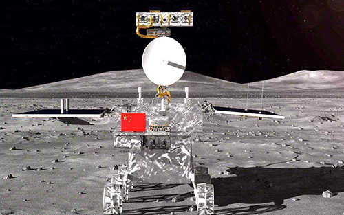

嫦娥四号探测器
发展历程
2018年5月21日，嫦娥四号中继星“鹊桥”号成功发射，为嫦娥四号的着陆器和月球车提供地月中继通信支持；同年12月8日，嫦娥四号探测器在西昌卫星发射中心由长征三号乙运载火箭成功发射
2019年1月3日，嫦娥四号成功着陆在月球背面南极-艾特肯盆地冯·卡门撞击坑的预选着陆区，月球车“玉兔二号”到达月面开始巡视探测；
同年1月11日，嫦娥四号着陆器与玉兔二号巡视器完成两器互拍，达到工程既定目标，标志着嫦娥四号任务圆满成功。
“嫦娥四号”意味着什么？
世界首个在月球背面软着陆和巡视探测的航天器。
嫦娥四号 — 展示
